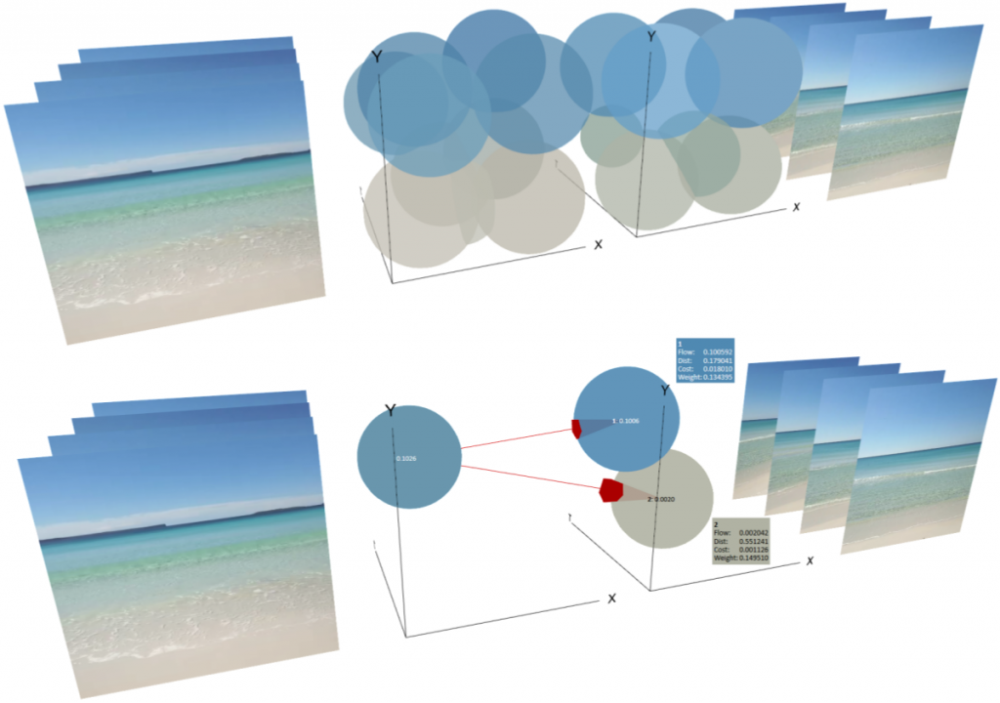

Building a Content-Based Multimedia Search Engine IV: Earth Mover's Distance
This is part 4 in a series of tutorials in which we learn how to build a content-based search engine that retrieves multimedia objects based on their content rather than based on keywords, title or meta description.
- Part I: Quantifying Similarity
- Part II: Extracting Feature Vectors
- Part III: Feature Signatures
- Part IV: Earth Mover's Distance
- Part V: Signature Quadratic Form Distance
- Part VI: Efficient Query Processing
We have seen how we can represent multimedia objects efficiently and expressively by summarizing a set of feature vectors into a data structure called a feature signature. Given two multimedia objects represented as feature signatures, we can measure the dissimilarity of the objects using a distance measure on their feature signatures. Numerous distance measures for feature signatures have been proposed (see [BS13] for an overview). The distance measure that has turned out to be the most effective is called the Earth Mover's Distance.
Proposed in [RTG00] for the domain of content-based image retrieval, the Earth Mover's Distance (short: EMD) is a distance measure on feature signatures that can be thought of as the minimum required cost for transforming one feature signature into the other one. This cost is formulated by means of a transportation problem: We determine the optimal way to move the weights from the representatives of the first signature ($X$) to the representatives of the second signature ($Y$). The cost for moving a certain amount of weight is given by the amount of weight multiplied by the distance over which it is transported.
The following image depicts an example. On the top, we see the feature signatures of two videos. Let's call the left-hand signature $X$ and the right-hand signature $Y$. On the bottom, we see an isolated representative of $X$ and the representatives of $Y$ to which it moves weight. As we can see, the representatives in $Y$ to which $X$'s representative moves weight are quite similar to $X$'s representative, resulting in a relatively small "movement cost" or "transformation cost" for this representative.

Let's see how we can formulate the Earth Mover's Distance as an optimization problem. Let $\mathbb{F}$ be the set of all possible features, $\delta : \mathbb{F} \times \mathbb{F} \rightarrow \mathbb{R}_{\geq 0}$ be a distance function on features (called ground distance, e.g. the Euclidean distance) and $X, Y \in \mathbb{S}$ be two feature signatures. We call $f : R_X \times R_Y \rightarrow \mathbb{R}$ a flow from signature $X$ to signature $Y$. For two representatives $g \in R_X, h \in R_Y$, it tells us how much weight is moved from $g$ to $h$. $f$ is called a feasible flow if it fulfills the following constraints:
- Non-negativity constraint: $\forall g \in R_X, h \in R_Y: f(g, h) \geq 0$
Intuitively, for the definition of a flow to make sense, it is required that it assigns a positive number to each pair of representatives. - Source constraint: $\forall g \in R_X: \sum_{h \in R_Y} f(g, h) \leq X(g)$
This means that for every representative $g$ in the "source" signature $X$, the total amount of flow going out of $g$ must not exceed the total weight of $g$. - Target constraint: $\forall h \in R_Y: \sum_{g \in R_X} f(g, h) \leq Y(g)$
This means that for every representative $h$ in the "target" signature $Y$, the total amount of flow going into $h$ must not exceed the total weight or "capacity" of $h$. - Total flow constraint: $\sum_{g \in R_X} \sum_{h \in R_Y} f(g, h) = min\{ \sum_{g \in R_X} X(g), \sum_{h \in R_Y} Y(h) \}$
This means that the total amount of flow going from $X$ to $Y$ should be equal to the minimum of the total weight of the two signatures. If $X$ has a smaller total weight, this means that all of $X$'s weight is moved to $Y$. If $Y$ has a smaller total weight, this means that as much of $X$'s weight as possible is moved to $Y$.
Now let $F = \{f \; | \; f \; \text{is a feasible flow}\}$. There are infinitely many feasible flows. We are interested in the flow with the minimum cost, where the cost is defined as the sum over all pairs of representatives $g$, $h$ of the flow $f(g, h)$ multiplied by their ground distance $\delta(g, h)$. Intuitively, this means that we want to find a flow that tends to move weights from representatives in $X$ to nearby (i.e. similar) representatives in $Y$. The Earth Mover's Distance is then defined as the cost of the minimum cost flow, i.e. the cost required to transform one signature into the other one.
$$EMD_\delta(X, Y) = min_{f \in F} \left \{ \frac{ \sum_{g \in R_X} \sum_{h \in R_Y} f(g, h) \cdot \delta(g, h) }{ min\{ \sum_{g \in R_X} X(g), \sum_{h \in R_Y} Y(h) \} } \right \}$$
The denominator acts as a normalization term.
The definition of the EMD corresponds to a linear program, i.e. an optimization problem with a linear objective function and linear constraints. It can be solved, for instance, using the Simplex algorithm (cf. [Van01]), which has an exponential worst-time complexity. In practice, we would just use a library that calculates the Earth Mover's Distance for us directly. According to [SJ08], the empirical time complexity for calculating the Earth Mover’s Distance between two signatures $X$ and $Y$ using the simplex algorithm lies between $\mathcal{O}(n^3)$ and $\mathcal{O}(n^4)$ where $n = |R_X| + |R_Y|$. An approximation to the Earth Mover's Distance can, however, be computed in linear time [SJ08]. The Earth Mover’s Distance is a metric, provided that the ground distance is a metric and the compared signatures are normalized to the same total weight.
In the next section, we present another distance measure on feature signatures that is only slightly less effective, but can be computed in quadratic time: the Signature Quadratic Form Distance
References
[BS13] Christian Beecks and Thomas Seidl. Distance based similarity models for content based multimedia retrieval. PhD thesis, Aachen, 2013. Zsfassung in dt. und engl. Sprache; Aachen, Techn. Hochsch., Diss., 2013.
[RTG00] Yossi Rubner, Carlo Tomasi, and Leonidas J Guibas. The earth mover’s distance as a metric for image retrieval. International journal of computer vision, 40(2):99–121, 2000.
[Van01] Robert J Vanderbei. Linear programming. Foundations and extensions, International Series in Operations Research & Management Science, 37, 2001.
[SJ08] Sameer Shirdhonkar and David W Jacobs. Approximate earth mover’s distance in linear time. In Computer Vision and Pattern Recognition, 2008. CVPR 2008. IEEE Conference on, pages 1–8. IEEE, 2008.